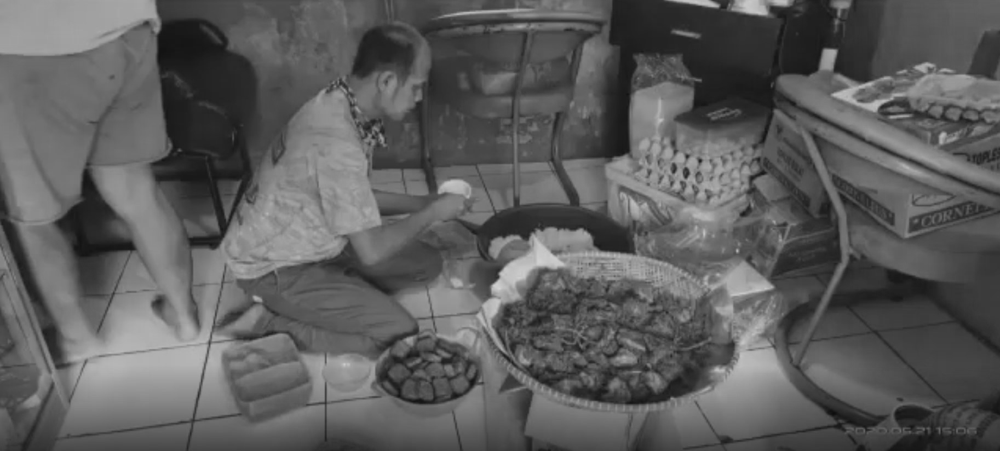

Tak Seorang Pun Pantas Lapar Solidaritas Sosial Bandung dan Nyala Kemandirian Pangan Semangat Anti-Korupsi Lewat Jejaring Dapur Umum  Transpuan dan Solidaritas Pangan: Kisah Srikandi Pasundan di Dapur Umum Caringin Bandung Kompilasi Dasawarsa Kebisingan dari Grimloc Records —Benefit untuk Solidaritas Sosial Bandung